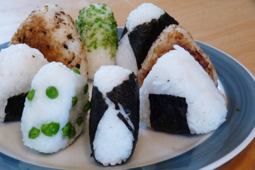

Onigiri - Pokemon
When 4Kids was dubbing Pokémon, they though little children wouldn’t understand what some of the foreign strange foods were, so they changed it in the script. Thus onigiri (a common food in the show) became everything from sandwiches to popcorn balls to, most commonly, jelly filled donuts. And, honestly, as a child, I knew something was up. Those weren’t no jelly filled donuts everyone was munching down on. Anyway, onigiri itself is a staple food in Japan, simple, portable, and filling, making it perfect to take on long adventures to duel gym leaders and Team Rocket. I hope you enjoy them almost as much a as a box full of donuts!
Ingredients:
- Rice (However much you want to make. I used 1 cup of uncooked rice for the onigiri in the picture above. As always, follow this recipe to cook the rice
- Salt
- Optional:
- Nori - The thin, paper like seaweed used to wrap up sushi
- Furikake - Also known as rice seasoning, it’s normally just bonito flakes, some nori, maybe some sesame seeds, and flavoring)
- Peas
- Soy sauce
- Fillings - The most common filling for onigiri would probably be umeboshi, or sour pickled plums, however it is quite and acquired taste (my host mother laughed at the puckered face I made after eating my first one), so watch out. Other common fillings are canned tuna (mixed with mayo and sometimes wasabi), cooked tuna or other fish, fried chicken, a little cooked spam, or just about any kind of pickled vegetable.
Ingredients:
- Once the rice is cooked and cooled down, all you have to do is shape them. I have a difficult time with this, so what I’ve learned to do is use some plastic wrap. Put a scoop of rice in the middle of the plastic wrap and wrap it up.
- Onigiri Variation #1:If you want to make pea onigiri, like in the picture above, or you want to mix in some furikake, you need to do this before you put the rice in the plastic wrap. Just take your scoop of rice, put it in a bowl, and mix in your ingredients with a utensil.
- Now, the shaping. Hold the wrapped up rice in your hand. Cup your hand so it looks like a “U”, and then cup your other hand, perpendicularly, on top of it tightly. Gently squeeze the rice. If you’re doing it correctly, it should start to look kind of like a triangle. Then, rotate the rice ball in your hands, so a different point is pointing downward and repeat.
- Onigiri Variation #2If you want to add a filling, sometime near the end of forming the onigiri, press a dent in the middle of rice with your thumb. Add your filling, and cover the hole with more rice, and continue forming.
- Take the rice out of the plastic wrap and form it a few times with your bare hands. Then place it on a plate, and sprinkle some salt on them.
- Onigiri Variation #3:You can add nori to just about any type of onigiri. You’ll need to cut up the nori to fit, but you can cut it into any shape you want, be it a larger sheet to cover the entire onigiri, a small little rectangle for just on the bottom, or some cute shapes.
- Onigiri Variation #4:In addition to the salt, you can sprinkle some sesame seeds or furikake on top, and press it into the rice.
- Onigiri Variation #5:Finally, one of my favorite types of onigiri, yaki onigiri, or grilled onigiri. Now, I don’t have the appropriate small grill to make these, so I make them in the oven. Just heat your oven up to a low heat, brush some soy sauce onto one side of the onigiri, place it on a cookie sheet, and put it in the oven. In 10-20 minutes, flip the onigiri over, and brush some more soy sauce onto the other side, and cook it again. Just keep an eye on it, and cook it until it’s slightly crispy on both sides.